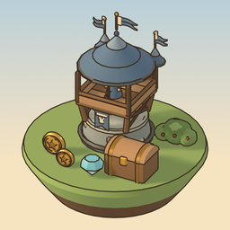

Lootwarden — xây tháp, nhặt loot, Thức Tỉnh
Game thủ thành 3D màn dọc, chơi một tay trên iPhone và iPad: xây tháp dọc con đường, hạ quái, nhặt vàng, thẻ tháp và bùa rơi ra giữa trận để nâng cấp ngay — tới khi tháp đủ sao để Thức Tỉnh. Chơi hoàn toàn ngoại tuyến, không quảng cáo, không tài khoản, không mua trong ứng dụng.
Cần giúp đỡ?
Viết cho chúng tôi: gdcompanylimited@gmail.com. Chúng tôi thường trả lời trong vòng 2 ngày làm việc. Khi báo lỗi, hãy kèm đời máy, phiên bản iOS, phiên bản Lootwarden (dòng "Lootwarden v…" ở cuối Cài đặt), màn đang chơi và các bước để lặp lại lỗi.
Câu hỏi thường gặp
Chơi thế nào?
Chạm vào ô đất trống dọc đường để xây tháp (Cung, Pháo, Pháp Sư, Doanh Trại…), chạm vào tháp để nâng cấp bằng vàng. Quái chết rơi ra vàng, thẻ tháp và bùa — nhặt lên rồi kéo vào tháp để dùng ngay. Mỗi thẻ cùng loại cộng thêm ★; đủ sao, tháp Thức Tỉnh thành chiến binh nhảy xuống đường. Đừng để quái đi hết đường.
Game có cần mạng hay tài khoản không?
Không. Lootwarden chạy hoàn toàn ngoại tuyến, không có tài khoản, không quảng cáo, không mua trong ứng dụng, không công cụ phân tích. Tiến trình chỉ lưu trên máy của bạn. Xem chính sách quyền riêng tư.
Xu, gem và Rương có tốn tiền thật không?
Không. Xu và gem chỉ kiếm được bằng cách chơi (thắng màn, nhiệm vụ ngày, lịch đăng nhập, kho bạc). Rương mở bằng gem trong game và có cơ chế bảo hiểm (pity) rõ ràng. Game không bán gì bằng tiền thật.
Chuyển sang máy mới có giữ tiến trình không?
Có hai cách: (1) Cài đặt › Sao lưu dữ liệu › Xuất mã › Sao chép, gửi mã đó sang máy mới rồi vào Cài đặt › Nhập mã và dán vào; (2) chuyển máy bằng bản sao lưu iCloud hoặc máy tính (do Apple thực hiện). Game không có máy chủ nên không đồng bộ qua tài khoản.
Máy bị nóng hoặc giật?
Bật Cài đặt › Giảm chuyển động. Đóng các ứng dụng khác đang chạy và giữ máy không quá nóng khi sạc cũng giúp game mượt hơn.
Tắt rung hoặc âm thanh ở đâu?
Cài đặt › Nhạc và Hiệu ứng để chỉnh âm lượng; tắt "Rung khi nhặt loot" để bỏ rung.
Xoá toàn bộ dữ liệu bằng cách nào?
Cài đặt › Xoá save › Xoá save (xác nhận lần hai; không thể hoàn tác), hoặc gỡ ứng dụng.
Yêu cầu hệ thống
iPhone hoặc iPad chạy iOS / iPadOS 15 trở lên. Hoạt động hoàn toàn ngoại tuyến. Ngôn ngữ trong game: Tiếng Việt.
Lootwarden Support
Lootwarden is a one-handed, portrait 3D tower defense game for iPhone and iPad: build towers along the road, defeat monsters, and grab the gold, tower cards and charms they drop to upgrade on the spot — until a tower has enough stars to Awaken. Fully offline, no ads, no account, no in-app purchases.
Need help?
Email us at gdcompanylimited@gmail.com. We usually reply within two business days. For bug reports, please include your device model, iOS version, the Lootwarden version (the "Lootwarden v…" line at the bottom of Settings), the level you were playing and the steps to reproduce.
FAQ
How do I play?
Tap an empty plot next to the road to build a tower (Archer, Cannon, Mage, Barracks…) and tap a tower to upgrade it with gold. Defeated monsters drop gold, tower cards and charms — pick them up and drag them onto a tower to use them right away. Each matching card adds a ★; with enough stars the tower Awakens into a warrior that leaps onto the road. Don't let monsters reach the end of the road.
Do I need an internet connection or an account?
No. Lootwarden works fully offline, with no account, no ads, no in-app purchases and no analytics. Progress is stored only on your device. See the privacy policy.
Do coins, gems or chests cost real money?
No. Coins and gems are only earned by playing (winning levels, daily quests, the login calendar, the vault). Chests are opened with in-game gems and have a clear pity system. Nothing is sold for real money.
Can I move my progress to a new device?
Yes: (1) Settings › Back up data › Export code › Copy, send that code to the new device, then Settings › Import code and paste it; or (2) move devices with an iCloud or computer backup made by Apple. There is no server, so there is no account sync.
How do I delete everything?
Settings › Delete save, then confirm (cannot be undone), or delete the app. (In-game labels are in Vietnamese: Cài đặt › Xoá save.)
Requirements
iPhone or iPad running iOS / iPadOS 15 or later. Works fully offline. In-game language: Vietnamese.